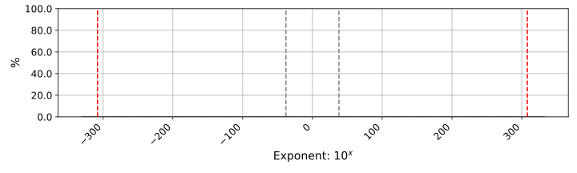
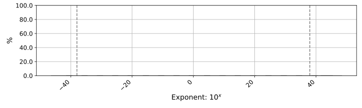

Main Report
| Events | ||
|---|---|---|
Infinity (+)
Detected when operations produce positive infinity, such as 1.0 / 0.0.
Infinities propagate through calculations: for example, 2 + ∞ = ∞.
|
0 | |
Infinity (-)
Detected when operations produce negative infinity.
|
0 | |
NaN
NaN (not a number) are the result of invalid operations, such as 0/0 or sqrt(-1).
|
0 |
Division by zero
Occurs when a finite nonzero number is divided by zero; typically produces infinity.
|
0 | |
Underflow (subnormal)
Detected when an operation produces a subnormal number
because the result was not representable as a normal number.
|
0 | |
Comparison
Occurs when two floating-point numbers are compared for equality.
Often comparing if two floating-point numbers are equal is not good practice.
|
0 | |
Cancellation
Occurs when two nearly equal numbers are subtracted.
By default, this event is detected when at least ten decimal digits are lost due to a subtraction.
|
0 | |
Latent Infinity (+)
Detected when an operation produces a normal number that is large,
and it is in close proximity to positive infinity.
|
0 | |
Latent Infinity (-)
Detected when an operation produces a normal number that is large,
and it is in close proximity to negative infinity.
|
0 | |
Latent underflow
Detected when an operation produces a normal number that is small
and it is in close proximity to becoming an underflow (subnormal number).
|
0 |
| Code paths: | Not found |
| Files affected: | 0 |
| Lines affected: | 0 |
Exponent Usage Report
FP64 Distribution
| Smallest number: 4.940...x10-324 | Largest number: 1.797...x10308 |

FP32 Distribution
| Smallest number: 1.401...x10-45 | Largest number: 3.402...x10+38 |

Instrumented Instructions
| FP32: | 0 |
| FP64: | 0 |
| Rounding Error | Relative Error | ||
|---|---|---|---|
| 1 | // -*- C++ -*- | ||
| 2 | ... | ||
| 10 | ... | ||
| 11 | #define _LIBCPP_VECTOR | ||
| 12 | | 9.5367432e-08 | 2.8049245e-08 |
| 13 | // clang-format off | ||
| 14 | ... | ||
| 41 | ... | ||
| 42 | explicit vector(size_type n, const allocator_type&); // C++14 | ||
| 43 | vector(size_type n, const value_type& value, const allocator_type& = allocator_type()); | 0.0000000e+00 | 0.0000000e+00 |
| 44 | template | 0.0000000e+00 | 0.0000000e+00 |
| 45 | vector(InputIterator first, InputIterator last, const allocator_type& = allocator_type()); | ||
| 46 | ... | ||
| 69 | ... | ||
| 70 | const_iterator begin() const noexcept; | ||
| 71 | iterator end() noexcept; | 5.9604645e-09 | 1.4901161e-08 |
| 72 | const_iterator end() const noexcept; | ||
| 73 | | ||
| 74 | reverse_iterator rbegin() noexcept; | -9.5367432e-08 | 2.8049245e-08 |
| 75 | const_reverse_iterator rbegin() const noexcept; | 5.9604645e-09 | 1.4901161e-08 |
| 76 | reverse_iterator rend() noexcept; | ||
| 77 | ... |